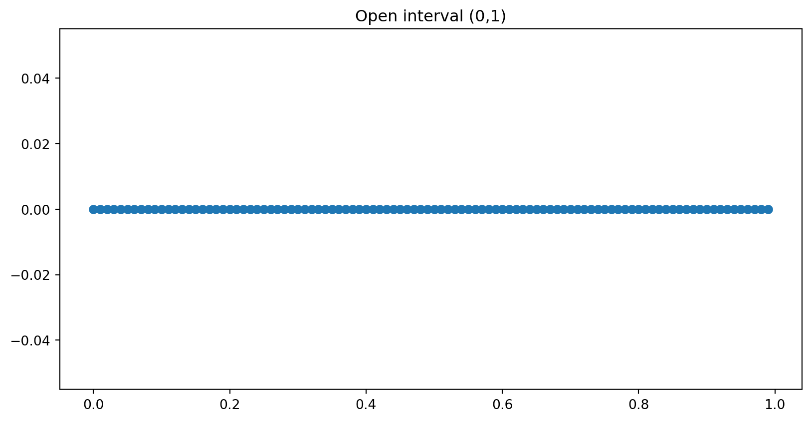
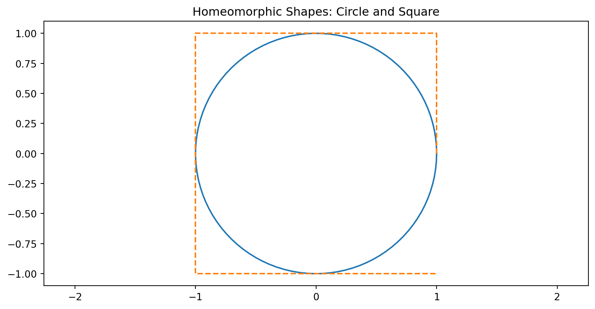
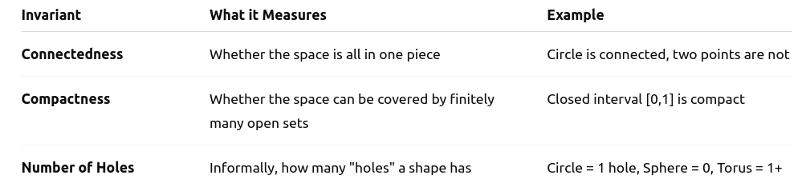
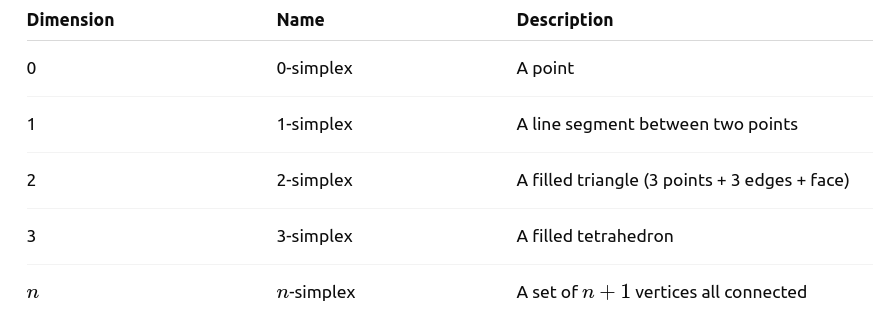

import numpy as np
# Define a basic open interval (0, 1)
X = np.linspace(0, 1, 100, endpoint=False)
# Visualize it
import matplotlib.pyplot as plt
plt.plot(X, np.zeros_like(X), 'o')
plt.title("Open interval (0,1)")
plt.show()
Autumn 2025
A Topological space is a set \(\mathcal{X}\) with a collection \(\mathcal{T}\) of subsets satisfying:
A Topological space is a set \(\mathcal{X}\) with a collection \(\mathcal{T}\) of subsets satisfying:
Example: The real numbers \(\mathbb{R}\) with the standard topology.
A function \(f: \mathcal{X} \rightarrow \mathcal{Y}\) is continuous if the preimage of every open set in \(\mathcal{Y}\) is open in \(\mathcal{X}\).
A function \(f: \mathcal{X} \rightarrow \mathcal{Y}\) is continuous if the preimage of every open set in \(\mathcal{Y}\) is open in \(\mathcal{X}\).
Example: \(f(x) = X^2\) is continuous in \(\mathbb{R}\).
A homeomorphism is a bijective (one-to-one and onto), continuous function between two topological spaces, with a continuous inverse.
A homeomorphism is a bijective (one-to-one and onto), continuous function between two topological spaces, with a continuous inverse.
A homeomorphism is a bijective (one-to-one and onto), continuous function between two topological spaces, with a continuous inverse.
Example:
import matplotlib.pyplot as plt
import numpy as np
theta = np.linspace(0, 2 * np.pi, 100)
circle_x, circle_y = np.cos(theta), np.sin(theta)
square_x, square_y = np.sign(np.cos(theta)), np.sign(np.sin(theta))
plt.plot(circle_x, circle_y, label='Circle')
plt.plot(square_x, square_y, label='Square (homeomorphic)', linestyle='--')
plt.axis('equal')
plt.title('Homeomorphic Shapes: Circle and Square')
plt.show()
A topological invariant is a property of a topological space that remains unchanged under homeomorphisms.
It helps to classify and distinguish different spaces.
A topological invariant is a property of a topological space that remains unchanged under homeomorphisms.
It helps to classify and distinguish different spaces.

The Euler Characteristic (denoted \(\mathcal{X}\)) is a topological invariant — a number that describes a topological space’s shape or structure in a way that remains unchanged under continuous deformations (like stretching or bending, but not tearing or gluing).
The Euler Characteristic (denoted \(\mathcal{X}\)) is a topological invariant — a number that describes a topological space’s shape or structure in a way that remains unchanged under continuous deformations (like stretching or bending, but not tearing or gluing).
\(\mathcal{X} = V -E + F\)
The Euler Characteristic (denoted \(\mathcal{X}\)) is a topological invariant — a number that describes a topological space’s shape or structure in a way that remains unchanged under continuous deformations (like stretching or bending, but not tearing or gluing).
\(\mathcal{X} = V -E + F\)
Where:
This formula applies to many polyhedral surfaces (like cubes, pyramids, etc.) and also generalizes to other topological spaces.
Why is it important?
Why is it important?
Why is it important?
Why is it important?
The Euler characteristic is also the alternating sum of Betti numbers (from homology):
\(\mathcal{X} = \beta_0 - \beta_1 + \beta_2 - \dots\)
Where:
More generally, in algebraic topology, the Euler characteristic is the alternating sum of Betti numbers:
\(\mathcal{X} = \sum_{k=0}^n (-1)^k \beta_k\)
Where:
A simplex is a generalization of a triangle or tetrahedron to any dimension.
A simplex is a generalization of a triangle or tetrahedron to any dimension.

A simplex is a generalization of a triangle or tetrahedron to any dimension.
Each simplex contains all of its faces, meaning a 2-simplex contains the 3 edges and 3 vertices that define it.
A simplicial complex is a collection of simplices (points, edges, triangles, etc.) glued together nicely:
A simplicial complex is a collection of simplices (points, edges, triangles, etc.) glued together nicely:
A simplicial complex is a collection of simplices (points, edges, triangles, etc.) glued together nicely:
It’s like building a shape out of Lego blocks where each block is a simplex.
The Vietoris–Rips complex (or Rips complex) is a way to approximate the shape of a point cloud (a dataset in Euclidean space) by building a simplicial complex.
The Vietoris–Rips complex (or Rips complex) is a way to approximate the shape of a point cloud (a dataset in Euclidean space) by building a simplicial complex.
How it works?
The Vietoris–Rips complex (or Rips complex) is a way to approximate the shape of a point cloud (a dataset in Euclidean space) by building a simplicial complex.
How it works?
Given a set of points \(\mathcal{X}\) and a distance threshold \(\epsilon\):
Purpose:
This complex gives a discrete, combinatorial representation of the shape of the data at a given scale \(\epsilon\). We compute homology of this complex to detect:
Persistent homology tracks topological features (e.g., connected components, holes, voids) across multiple scales of a dataset.
Persistent homology tracks topological features (e.g., connected components, holes, voids) across multiple scales of a dataset.
Persistent homology tracks topological features (e.g., connected components, holes, voids) across multiple scales of a dataset.
from sklearn.datasets import make_circles
from gtda.homology import VietorisRipsPersistence
from gtda.plotting import plot_diagram
X, _ = make_circles(n_samples=100, noise=0.05) # Generate circle-shaped point cloud
vr = VietorisRipsPersistence(homology_dimensions=[0, 1]) # Persistent homology
diagrams = vr.fit_transform([X])
# Visualize
plot_diagram(diagrams[0])